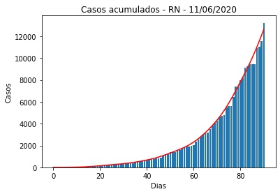
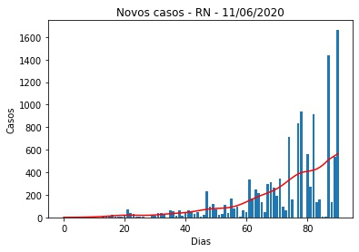
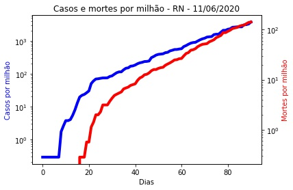
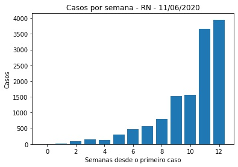
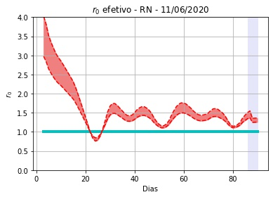
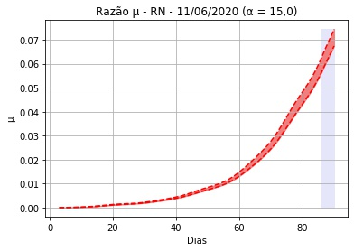

RN - 11/06/2020.
Detalhes técnicos, aqui. Clique aqui para uma versão em PDF desta análise.
População: 3.506.853
Datas do primeiro e do último elementos na série: 3/13/2020 e 6/11/2020. Número de elementos na série: 91 (13 semanas e 0 dias).
Número de casos totais e mortes por milhão de habitantes: 3.774 e 141
r0 efetivo médio (duas últimas semanas - três dias de atraso): 1,31 (std = 0,14).
Último intervalo para r0 (três dias de atraso): (1,12 : 1,16).
Limiar imunidade de rebanho nR (baseado na última semana - três dias de atraso) = 0,18 (0,13 : 0,23)
Previsão do número total de casos para os próximos 5 dias: 13.688, 14.143, 14.597, 15.052, 15.507.
 
 
 